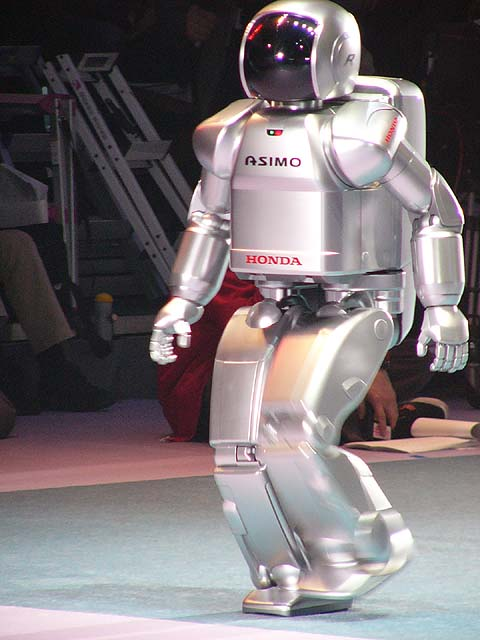
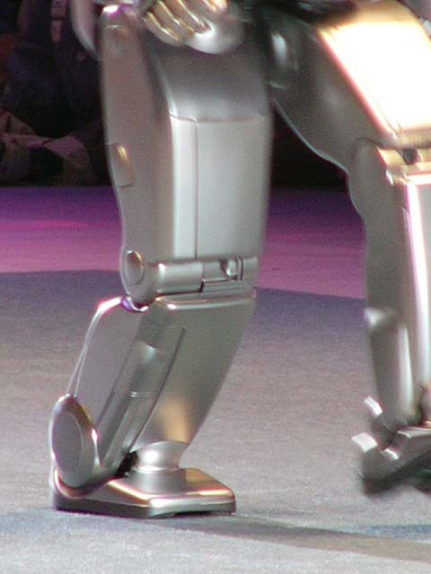
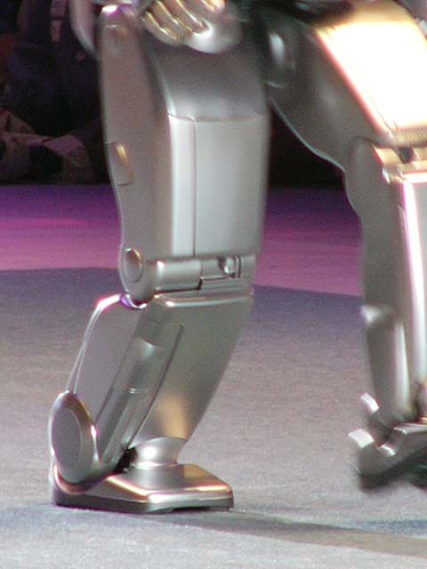

ASIMO
| 2000 | 2001 | 2002 | 2003 | 2004 | 2005 | 2007 | 2011 |
|---|
2003 (Hardware Revision)
April 3rd at Robodex 2003, a silver ASIMO walked out onto the Mega Stage for the first and only time.[1] Garnering the name ASIMO R from the "R" logo on its head and backpack, it was obvious that this new version was more than just aesthetic update.
Hardware
 

Compairing ASIMO R to ASIMO 2002, the differences become more obvious. Taking a look at the legs, they are notably a lot thicker. Now being able to walk 3km/h, nearly double the speed of the previous model, it was necessary to upgrade the hardware. Watching it walk looks like the footage had been sped-up or the feet are sticking to the ground, but that is infact its real speed.


The arms have gone throught some changes as well. First, the elbow is now double jointed, as previously the elbow hinge was slightly offset forward to allow the arm to close in tighter, the new design allows for more natural arm movements. And secondly, the forearms are much thicker.
Lastly, the backpack now has a thinner, sleaker design with less ventalation.